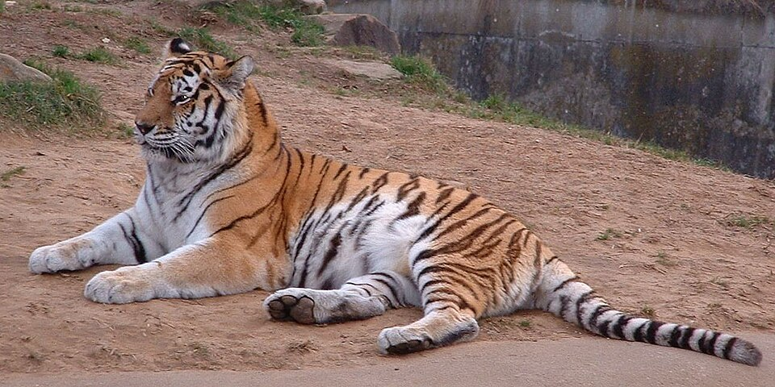

რა არის ველური ცხოველები?
ველური ცხოველები ცხოვრობენ ბუნებაში და არ არიან მოშინაურებული. ისინი ეკოლოგიური ბალანსის მნიშვნელოვანი ნაწილია.
ვეფხვი არის ძლიერი და სწრაფი მტაცებელი, მას აქვს უნიკალური ზოლები, რომლებიც იხმარება კამუფლირებისთვის ბუნებაში.
ვეფხვი კატისებრთა ოჯახის ყველაზე დიდი წარმომადგენელია, სხეულის სიგრძე 1,4–2,8 მ, კუდის — 0,6–1,1 მ, წონა 100–300 კგ. წაგრძელებული სხეული მოხატული აქვს განივი ზოლებით. გავრცელებულია ჩრდილოეთ კორეაში, ჩინეთში, ინდოეთში, ინდოჩინეთში, მალაის არქიპელაგზე, ჩრდილოეთ ირანში, უსურისა და ამურის მხარეებში, თალიშში, ამუდარიის ხეობაში, იშვიათად თურქმენეთში

ველური ცხოველები ცხოვრობენ ბუნებაში და არ არიან მოშინაურებული. ისინი ეკოლოგიური ბალანსის მნიშვნელოვანი ნაწილია.